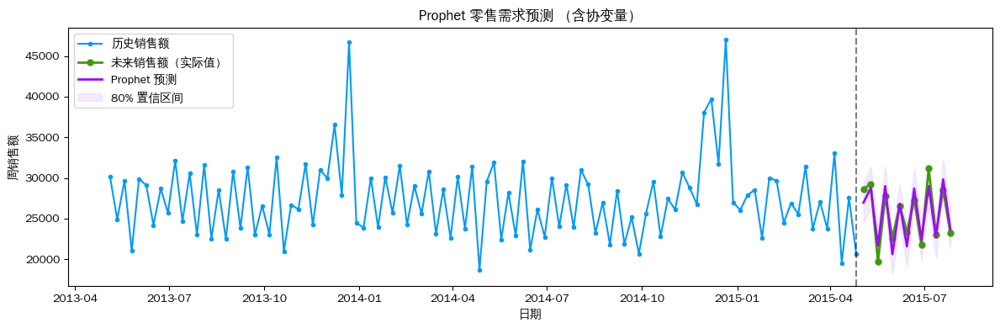
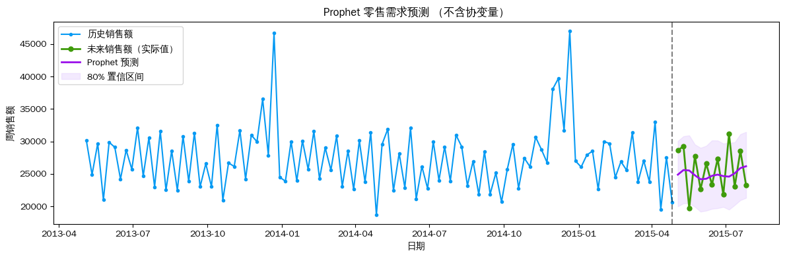

Prophet 时序预测——零售需求（含协变量）
使用 Facebook Prophet 预测门店下一季度（13周）的周销售额，以 Open、Promo、SchoolHoliday、StateHoliday 作为已知未来协变量，并与不含协变量的基线对比。
数据：AutoGluon retail_sales（Rossmann 门店销售，周频，门店 ID = "1"）
预测步长：13 周
import pandas as pd
import numpy as np
import matplotlib.pyplot as plt
import warnings
warnings.filterwarnings('ignore')
from prophet import Prophet
plt.rcParams['font.sans-serif'] = ['WenQuanYi Zen Hei', 'WenQuanYi Micro Hei']
plt.rcParams['axes.unicode_minus'] = False
TIMESERIES_ID = '1'
PREDICTION_LENGTH = 13
SHOW_HISTORY = 104 # 展示最近 104 周（约 2 年）历史数据
sales_context_df = pd.read_parquet(
'https://autogluon.s3.amazonaws.com/datasets/timeseries/retail_sales/train.parquet',
engine='fastparquet'
)
sales_context_df['timestamp'] = pd.to_datetime(sales_context_df['timestamp'])
sales_test_df = pd.read_parquet(
'https://autogluon.s3.amazonaws.com/datasets/timeseries/retail_sales/test.parquet',
engine='fastparquet'
)
sales_test_df['timestamp'] = pd.to_datetime(sales_test_df['timestamp'])
print('训练数据:', sales_context_df.shape, '| 列:', list(sales_context_df.columns))
print(f'时间范围: {sales_context_df["timestamp"].min().date()} ~ {sales_context_df["timestamp"].max().date()}')
print('预测期:', sales_test_df['timestamp'].min().date(), '~', sales_test_df['timestamp'].max().date())
sales_context_df.head(3)训练数据: (133800, 8) | 列: ['id', 'timestamp', 'Sales', 'Open', 'Promo', 'SchoolHoliday', 'StateHoliday', 'Customers']
时间范围: 2013-01-13 ~ 2015-04-26
预测期: 2015-05-03 ~ 2015-07-26| id | timestamp | Sales | Open | Promo | SchoolHoliday | StateHoliday | Customers | |
|---|---|---|---|---|---|---|---|---|
| 0 | 1 | 2013-01-13 | 32952.0 | 0.857143 | 0.714286 | 5.0 | 0.0 | 3918.0 |
| 1 | 1 | 2013-01-20 | 25978.0 | 0.857143 | 0.000000 | 0.0 | 0.0 | 3417.0 |
| 2 | 1 | 2013-01-27 | 33071.0 | 0.857143 | 0.714286 | 0.0 | 0.0 | 3862.0 |
# 过滤门店 1，重命名列；已知未来协变量包括 Open/Promo/SchoolHoliday/StateHoliday
FUTURE_COVS = ['Open', 'Promo', 'SchoolHoliday', 'StateHoliday']
df_context = (
sales_context_df[sales_context_df['id'] == TIMESERIES_ID]
.rename(columns={'timestamp': 'ds', 'Sales': 'y'})
[['ds', 'y'] + FUTURE_COVS]
.reset_index(drop=True)
)
df_future_cov = (
sales_test_df[sales_test_df['id'] == TIMESERIES_ID]
.rename(columns={'timestamp': 'ds'})
[['ds'] + FUTURE_COVS]
.reset_index(drop=True)
)
print(f'历史上下文: {len(df_context)} 行 ({df_context["ds"].min().date()} ~ {df_context["ds"].max().date()})')
print(f'未来协变量: {len(df_future_cov)} 行 ({df_future_cov["ds"].iloc[0].date()} ~ {df_future_cov["ds"].iloc[-1].date()})')
df_context.tail(3)历史上下文: 120 行 (2013-01-13 ~ 2015-04-26)
未来协变量: 13 行 (2015-05-03 ~ 2015-07-26)| ds | y | Open | Promo | SchoolHoliday | StateHoliday | |
|---|---|---|---|---|---|---|
| 117 | 2015-04-12 | 19546.0 | 0.714286 | 0.000000 | 5.0 | 1.0 |
| 118 | 2015-04-19 | 27563.0 | 0.857143 | 0.714286 | 0.0 | 0.0 |
| 119 | 2015-04-26 | 20670.0 | 0.857143 | 0.000000 | 0.0 | 0.0 |
# 训练 Prophet 模型（含协变量）
m_with_cov = Prophet(
yearly_seasonality=True,
weekly_seasonality=True,
daily_seasonality=False,
seasonality_mode='multiplicative',
interval_width=0.8,
)
for col in FUTURE_COVS:
m_with_cov.add_regressor(col)
m_with_cov.fit(df_context)
print('Prophet 模型训练完成（含协变量）')10:45:59 - cmdstanpy - INFO - Chain [1] start processing
10:45:59 - cmdstanpy - INFO - Chain [1] done processing
Prophet 模型训练完成（含协变量）# 预测：拼接历史时间戳（含协变量）+ 未来 13 周协变量
df_pred_input = pd.concat([df_context[['ds'] + FUTURE_COVS], df_future_cov], ignore_index=True)
forecast_w_cov = m_with_cov.predict(df_pred_input)
future_w_cov = forecast_w_cov.tail(PREDICTION_LENGTH)
print('预测完成')
future_w_cov[['ds', 'yhat', 'yhat_lower', 'yhat_upper']]预测完成| ds | yhat | yhat_lower | yhat_upper | |
|---|---|---|---|---|
| 120 | 2015-05-03 | 26968.614991 | 24557.102544 | 29319.523182 |
| 121 | 2015-05-10 | 28763.304876 | 26219.870640 | 31391.328691 |
| 122 | 2015-05-17 | 21648.594904 | 19213.315855 | 24188.741393 |
| 123 | 2015-05-24 | 29000.035482 | 26412.158641 | 31428.825963 |
| 124 | 2015-05-31 | 20636.572183 | 18157.979223 | 23190.092152 |
| 125 | 2015-06-07 | 26821.217876 | 24390.184068 | 29262.339298 |
| 126 | 2015-06-14 | 21589.798414 | 19047.259791 | 24276.786701 |
| 127 | 2015-06-21 | 28703.487969 | 26406.125154 | 31089.641178 |
| 128 | 2015-06-28 | 22399.262417 | 19891.497878 | 24834.254153 |
| 129 | 2015-07-05 | 28993.082027 | 26499.495238 | 31501.895295 |
| 130 | 2015-07-12 | 22686.745981 | 20249.230240 | 24889.301266 |
| 131 | 2015-07-19 | 29827.621707 | 27401.881109 | 32288.391488 |
| 132 | 2015-07-26 | 23637.338159 | 21329.127561 | 26249.687844 |
def plot_prophet_retail(df_context, future_forecast, sales_test_df,
timeseries_id, title_suffix=''):
df_hist = df_context.tail(SHOW_HISTORY)
df_gt = (sales_test_df[sales_test_df['id'] == timeseries_id]
.rename(columns={'timestamp': 'ds'}))
fig, ax = plt.subplots(figsize=(12, 4))
ax.plot(df_hist['ds'], df_hist['y'],
label='历史销售额', color='xkcd:azure', marker='o', markersize=3)
ax.plot(df_gt['ds'], df_gt['Sales'],
label='未来销售额（实际值）', color='xkcd:grass green', marker='o', markersize=5, linewidth=2)
ax.plot(future_forecast['ds'], future_forecast['yhat'],
label='Prophet 预测', color='xkcd:violet', linewidth=2)
ax.fill_between(future_forecast['ds'],
future_forecast['yhat_lower'], future_forecast['yhat_upper'],
alpha=0.35, label='80% 置信区间', color='xkcd:light lavender')
ax.axvline(x=df_context['ds'].max(), color='black', linestyle='--', alpha=0.5)
ax.set_title(f'Prophet 零售需求预测 {title_suffix}')
ax.set_xlabel('日期')
ax.set_ylabel('周销售额')
ax.legend(loc='upper left')
plt.tight_layout()
plt.show()
plot_prophet_retail(df_context, future_w_cov, sales_test_df,
TIMESERIES_ID, title_suffix='（含协变量）')
# 对比：不含协变量的基线
m_no_cov = Prophet(
yearly_seasonality=True, weekly_seasonality=True, daily_seasonality=False,
seasonality_mode='multiplicative', interval_width=0.8,
)
m_no_cov.fit(df_context[['ds', 'y']])
future_no_cov_input = m_no_cov.make_future_dataframe(periods=PREDICTION_LENGTH, freq='W')
forecast_no_cov = m_no_cov.predict(future_no_cov_input)
future_no_cov = forecast_no_cov.tail(PREDICTION_LENGTH)
plot_prophet_retail(df_context, future_no_cov, sales_test_df,
TIMESERIES_ID, title_suffix='（不含协变量）')10:46:09 - cmdstanpy - INFO - Chain [1] start processing
10:46:09 - cmdstanpy - INFO - Chain [1] done processing
# 误差指标对比
gt = (sales_test_df[sales_test_df['id'] == TIMESERIES_ID]
.sort_values('timestamp')['Sales'].values)
def calc_metrics(y_true, y_pred, label):
mae = np.mean(np.abs(y_true - y_pred))
rmse = np.sqrt(np.mean((y_true - y_pred) ** 2))
mape = np.mean(np.abs((y_true - y_pred) / y_true)) * 100
print(f'{label} MAE={mae:.1f} RMSE={rmse:.1f} MAPE={mape:.2f}%')
print('─' * 55)
calc_metrics(gt, future_w_cov['yhat'].values, 'Prophet 含协变量: ')
calc_metrics(gt, future_no_cov['yhat'].values, 'Prophet 不含协变量:')
print('─' * 55)───────────────────────────────────────────────────────
Prophet 含协变量: MAE=1194.1 RMSE=1372.6 MAPE=4.74%
Prophet 不含协变量: MAE=3147.3 RMSE=3475.1 MAPE=12.39%
───────────────────────────────────────────────────────